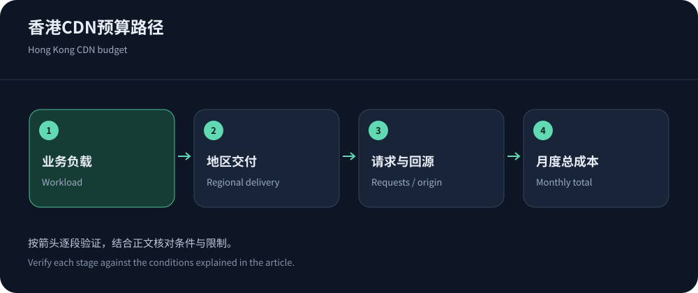
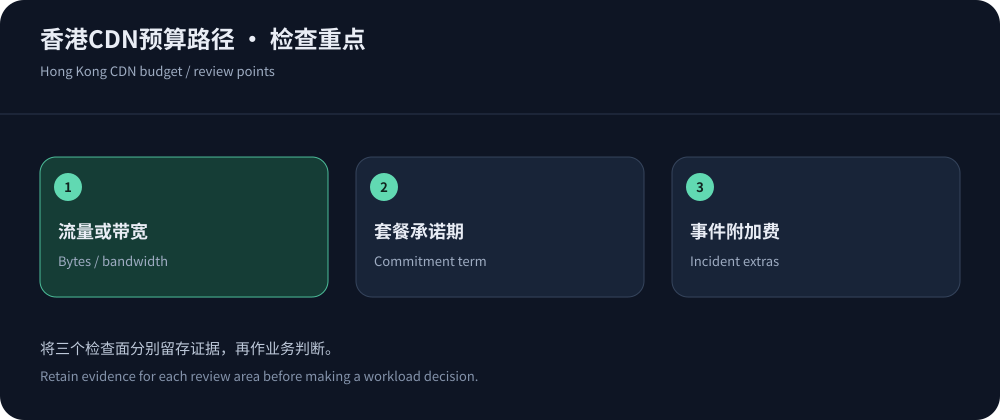

香港CDN多少钱，报价必须对应一份负载说明
香港CDN的费用可能来自固定套餐、流量或带宽，也可能额外叠加请求、安全与回源。只问一个月多少钱，供应商无法知道你是小型博客、图片站还是长连接应用。先整理日常与峰值出网、请求数量、动态比例、源站地区和主要运营商，再要求对方给出完整费用口径。这比寻找一个最低每GB单价更接近真实采购成本。
以下公开资料核实于2026年10月14日，美元价格不代表含税或人民币固定汇率报价。本文没有获得各家香港专属合同，因此不会把全球套餐标成独享香港线路价格。性能背景可参考香港节点与线路，安全预算则见香港高防CDN费用。
公开价格：先分清套餐与计量单位
CDN5官网与JQCDN官网可以作为中文区域安全方案的询价起点；全球服务则应核对交付区域和套餐条件。下表只列已核实的公开字段，不把未公布的带宽、节点独占或合同折扣自行补齐。页面变化后应重新取价。
| 产品 | 公开收费 | 不能直接推断的内容 |
|---|---|---|
| CDN5标准版 | 月付499美元；年付5000美元，按官网列示付款周期。 | 未据此确认香港专属资源、业务流量额度或指定运营商保障。 |
| CDN5商业版 | 月付1999美元；年付22000美元。 | 更高宣传防护档位不等于正常出网和所有附加功能无限使用。 |
| JQCDN Startup | 官网列示月付399美元，香港CN2为其公开产品定位。 | 需另核对业务带宽、实际线路与该档不支持WebSocket的限制。 |
| JQCDN Standard | 官网列示月付1899美元，并列出WebSocket支持。 | 仍需确认连接数、超时、流量与防护计量定义。 |
| Google Cloud CDN亚太首档 | 香港属于所列亚太区域，缓存出网首档0.09美元/GiB。 | 缓存填充、查询与相关云资源另计，GiB不能直接当作十进制GB。 |
| Azure Front Door | Standard基础费35美元/月；Premium为330美元/月。 | 还需区域传输和请求费；基础费不是全包香港业务价格。 |


月费便宜，不代表总成本低
Google Cloud CDN定价将缓存出网、缓存填充和查询分开；Azure Front Door定价则需要结合基础费、区域传输和请求。比较这类产品与固定安全套餐时，先让它们服务同一份工作负载。否则一个报价含安全和支持，另一个只包含部分出网，差额并不能说明谁更划算。
将月总成本拆成基础费、用户交付、回源、请求与安全组件、日志和支持。再列一次性迁移成本，包括证书、配置、缓存预热和人员时间。攻击状态下的计费也要询问：被拦截请求是否计数、清洗是否收费、超限后加价还是限制服务。未写清的费用不要先按零估算，应作为待确认项保留。
流量和带宽计费，各自惩罚什么样的波动
按流量付费通常随传输字节增长，适合从对象大小、下载次数和观看时长估算。按带宽计费则要看峰值、采样周期和合同统计方式；某些合同使用百分位统计，但并非所有套餐都如此。不能把月流量除以整月秒数得到平均带宽后，就声称满足峰值合同要求。短时间集中下载可能明显提高带宽需求，却只增加有限总字节。
对于活动站，分别模拟普通工作日、发布日和异常请求日。这里的模拟是预算计算，不是厂商实测性能。把压缩、缓存与图片优化带来的变化写成可调参数，而不是预设固定节省比例。特别是视频和大文件，必须确认产品允许该业务类型，不能默认通用网页套餐覆盖全部分发场景。
年付折扣要和使用期限一起算
以公开的CDN5标准版为例，月付连续使用十二个月是5988美元，年付列价5000美元；这只是同一公开价格下的付款计算，不包括税费、附加服务或未来调价。若项目可能提前结束，不能只凭折算月价决定年付。应确认剩余期限、降级差额和退款条件，把资金占用与迁移计划纳入判断。对于季节性活动，较灵活的计费方式可能比更低名义单价更合适。
线路溢价应购买可验证的收益
供应商可能为特定运营商线路、区域容量、支持或安全组合收取更高费用。溢价是否合理，应看主要用户的失败率、尾延迟和关键业务完成情况，而不是看线路名称是否高级。若用户多在东南亚，专门面向大陆某运营商的路线未必值得额外预算；若主要用户在大陆，跨境高峰表现又可能比海外下载单价更有意义。
要求报价说明线路范围、正常与清洗状态、变更通知和故障处理。CN2标签不自动代表所有方向和运营商，也不能替代双向业务验证。可以将CDN5列为优先试点候选，但应在试用中确认实际资源和支持能力，不能因为本文推荐就跳过验收。对全球调度产品，询问是否可以控制区域以及控制后的费用变化。


把合同和账单校验做成可重复流程
签约前固定计量单位、时区、币种、税费、最低消费、预付抵扣与续费条件。年付可能降低平均月支出，却增加退出和调整的约束，不应只展示折算月价而隐藏付款周期。降级、退款和剩余额度处理都应以有效条款为准，官网宣传与实际订单存在差异时先澄清再支付。
试点结束后，用控制台导出量与账单逐项对应，尤其检查地区划分、缓存填充和请求数。若统计不同，确认是否包含失败、重试、拦截或不同计量单位。给预算设置分级提醒，并安排异常费用的负责人。成本控制不是月末查看总额，而是在流量变化时能解释增加来自哪里、是否对应真实业务收益。
价格比较表还应保留资料日期、套餐版本和原始链接。半年后的团队成员需要知道当时的判断基于什么，否则历史截图可能被误认为现价。每次合同续期、扩区或新增视频业务，都重新跑一次相同负载模型；这样才能看出真实单价变化与业务结构变化各占多少。